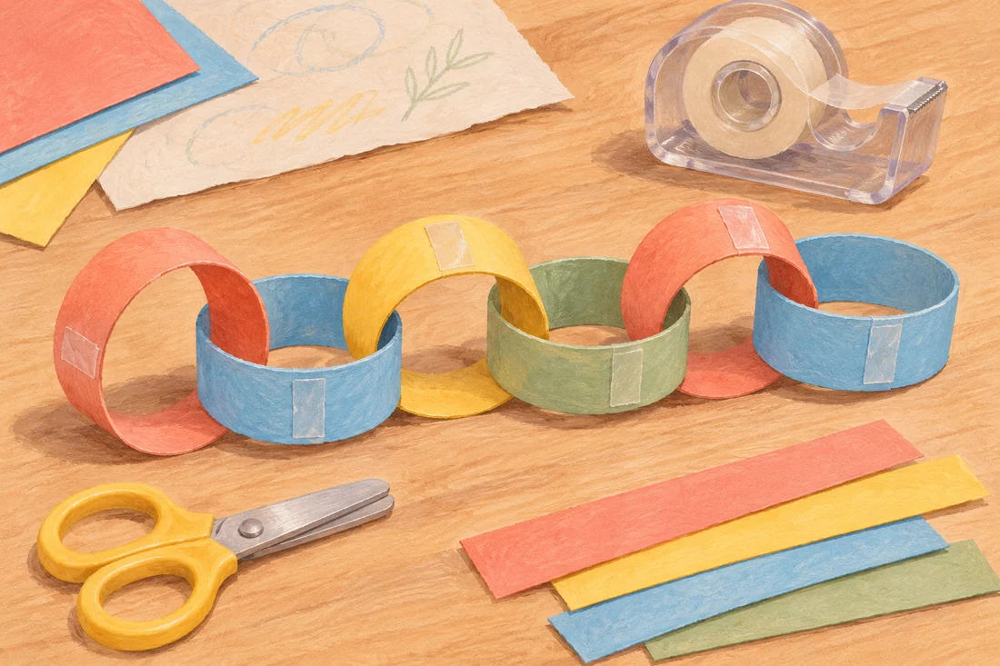
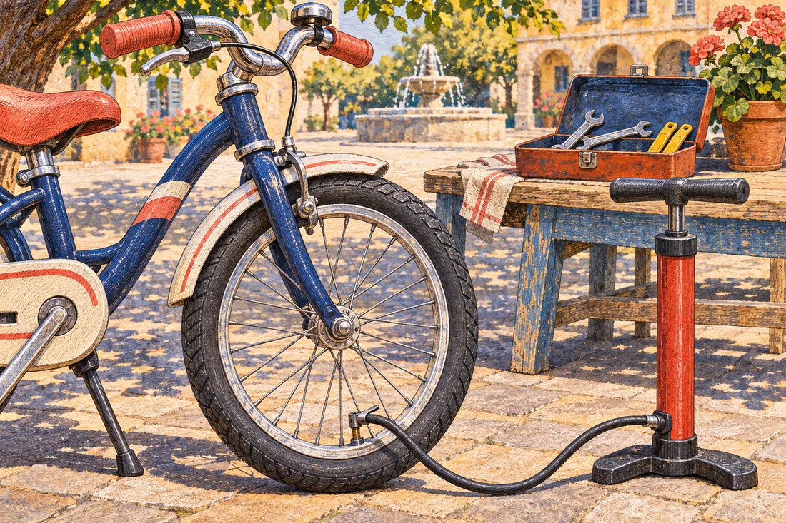
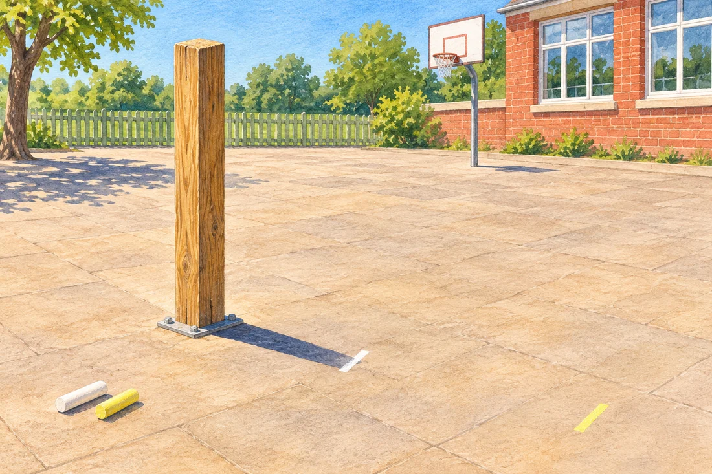
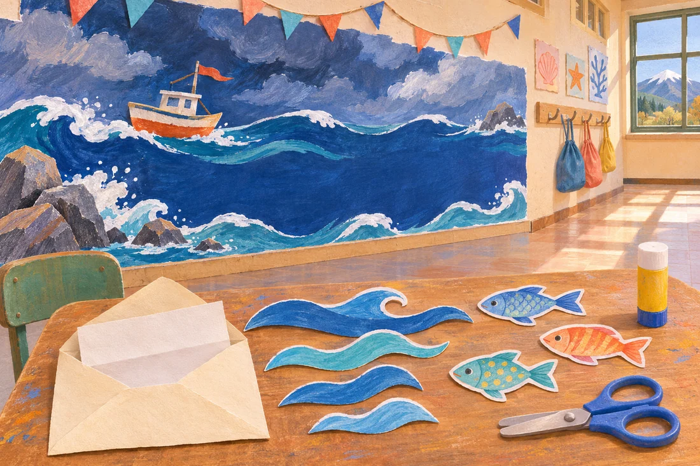
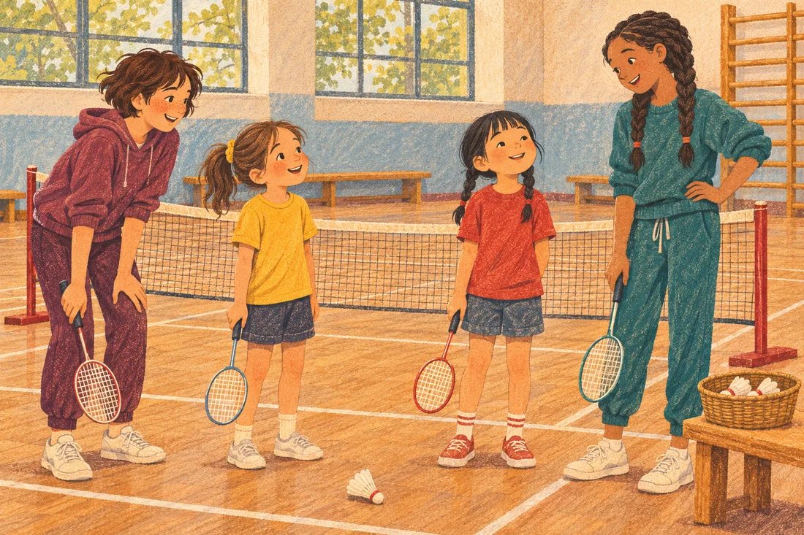

Narració3r de primària
El banc moll
La Júlia i l’Omar busquen un lloc sec per llegir al pati.
Prepara la fitxa · El banc moll627 comprensions lectores per a la teva aula
La Júlia i l’Omar busquen un lloc sec per llegir al pati.
Prepara la fitxa · El banc moll
Unes instruccions per fer una cadena de colors amb tires de paper.
Prepara la fitxa · Una garlanda de paper
En Biel entrevista la Joana, que ajuda a posar a punt les bicicletes del barri.
Prepara la fitxa · Una roda fluixa
Dues marques de guix en un mateix pati.
Prepara la fitxa · Ombres al pati
Una classe escriu a una altra escola per preparar un mural del mar entre totes dues.
Prepara la fitxa · Una carta plena de blauUn vespre ennuvolat sembla espatllar la primera visita d’en Dani a l’observatori.
Prepara la fitxa · Una nit sense estrelles
La crònica d’un torneig dedica les últimes línies a una escena que passa després de la final.
Prepara la fitxa · L’equip que es va quedar a recollirAssajar permet provar i corregir, però perquè funcioni cal acordar com reaccionem quan algú s’equivoca.
Prepara la fitxa · El dret a equivocar-se a l’assaigCap resultat amb aquests filtres.